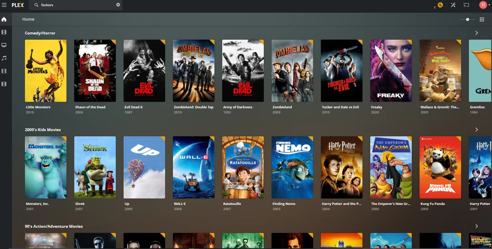

Project Image

Project Description
Built a home media server using Plex by installing Plex Media Server on a desktop computer and organizing personal media into structured folders. Created separate libraries for movies, television shows, and music, then added these folders to Plex for automatic scanning and metadata matching. Configured basic server settings and tested streaming through the Plex web interface and a client device on the same local network to confirm proper playback and performance.
Skills Learned
- Installing and configuring Plex Media Server software
- Organizing and managing media files for server-based applications
- Creating and maintaining media libraries within Plex
- Streaming and testing media playback over a local network
- Basic troubleshooting of server and client connectivity issues